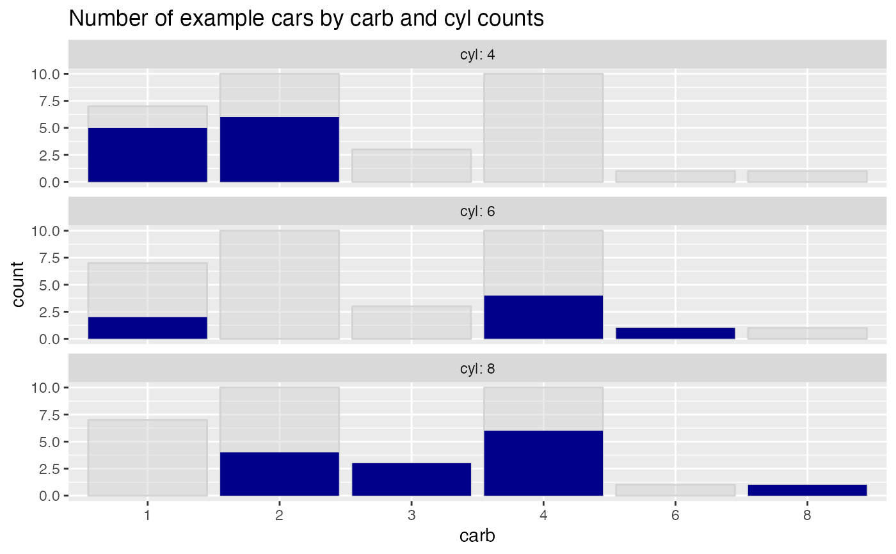
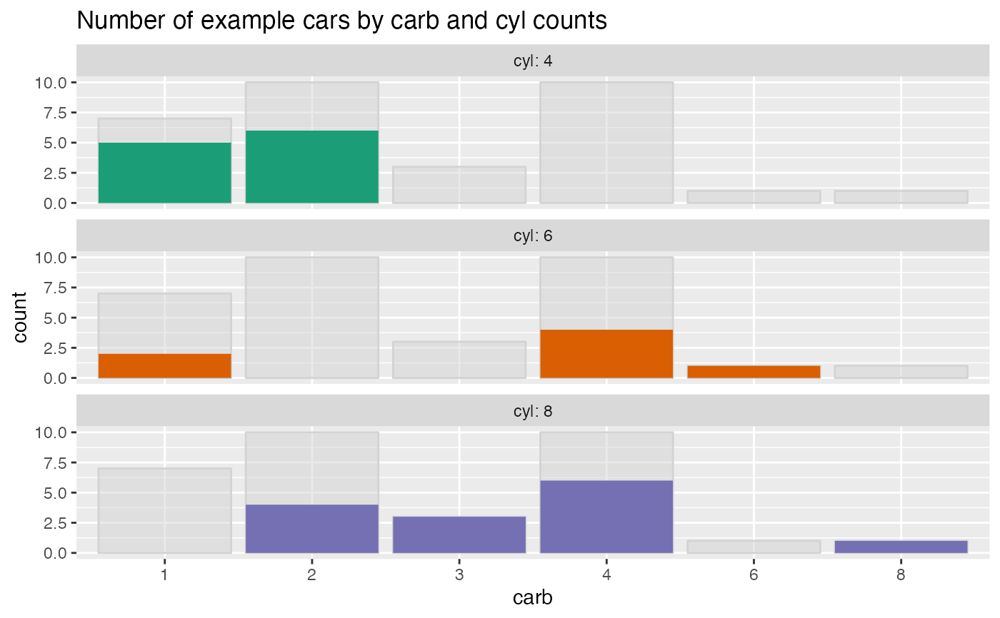

Plot a bar chart of row counts conditioned on the categorical variable condvar,
faceted on a second categorical variable, refinevar. Each faceted plot
also shows a "shadow plot" of the totals conditioned on condvar alone.
ShadowPlot( frm, condvar, refinevar, title, ..., monochrome = TRUE, palette = "Dark2", fillcolor = "darkblue", ncol = 1 )
| frm | data frame to get values from. |
|---|---|
| condvar | name of the primary conditioning variable (a categorical variable, controls x-axis). |
| refinevar | name of the second or refining conditioning variable (also a categorical variable, controls faceting). |
| title | title to place on plot. |
| ... | no unnamed argument, added to force named binding of later arguments. |
| monochrome | logical: if TRUE, all facets filled with same color |
| palette | character: if monochrome==FALSE, name of brewer color palette (can be NULL) |
| fillcolor | character: if monochrome==TRUE, name of fill color for bars |
| ncol | numeric: number of columns in facet_wrap. |
a ggplot2 bar chart counting examples grouped by condvar, faceted by refinevar.
This plot enables comparisons of subpopulation totals across both
condvar and refinevar simultaneously.
By default, the facet plots are arranged in a single column. This can be changed
with the optional ncol argument.
If palette is NULL, and monochrome is FALSE, plot colors will be chosen from the default ggplot2 palette. Setting palette to NULL
allows the user to choose a non-Brewer palette, for example with scale_fill_manual.
For consistency with previous releases, ShadowPlot defaults to monochrome = TRUE, while
ShadowHist defaults to monochrome = FALSE.
Please see here for some interesting discussion https://drsimonj.svbtle.com/plotting-background-data-for-groups-with-ggplot2.
ShadowPlot(mtcars, "carb", "cyl", title = "Number of example cars by carb and cyl counts")# colorcode the facets ShadowPlot(mtcars, "carb", "cyl", monochrome = FALSE, title = "Number of example cars by carb and cyl counts")